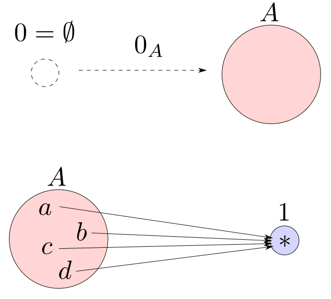

圏論勉強会
第6回
@ワークスアプリケーションズ
中村晃一2013年6月20日
謝辞
この勉強会の企画，会場設備の提供をして頂きました
㈱ ワークスアプリケーションズ様
にこの場をお借りして御礼申し上げます。
この会について
- 圏論(category theory)を題材にいろんなことを学びます。
- 分かり易さを重視して初歩的な例を多用します。
- 関数型言語の経験がある方がより楽しめると思います。資料中では主にHaskellを使います。
- 中高生も数人見ているらしいのでプログラミングと関係が浅い内容も取り上げます。
- この資料はhttp://nineties.github.com/category-seminarに置いてあります。
第6回:積・余積・極限
第6回の内容
今回は「普遍性」という性質によって定義される様々な対象について見ていきます。また,それらの構成法の一つである「極限」という概念について紹介します。
終対象・始対象
終対象
ある対象$1$が終対象(terminal object)であるとは, 任意の対象$A$から$1$への射が唯一つ存在する事である。
終対象は同型を除いて一意
【証明】
終対象が2つ($1$と$1'$)存在すると仮定すると,終対象の条件より射$f: 1\rightarrow 1'$と$g:1'\rightarrow 1$が存在する。すると,$g\circ f$と$1_1$が共に$1$から$1$への射となるが,$1$は終対象なのだからこれらは等しい。すなわち
$$ g\circ f = 1_1$$
である。同様に$ f\circ g = 1_{1'}$であるので$f,g$は同型射である。従って
$$ 1 \cong 1' $$
であるから終対象は同型を除いて一意に定まる。□

Well-defined性
終対象の条件を満たす対象は複数存在し得ますが,全て同型なので具体的な対象として何を選んでも 矛盾無く圏論の議論を進める事が出来ます。このような定義の性質をwell-defined性と言います。
始対象
ある対象$0$が始対象(initial object)であるとは, $0$から任意の対象$A$への射が唯一つ存在する事である。
始対象も同型を除いて一意
$\mathbf{C}$における始対象は双対圏$\mathbf{C}^{\mathrm{op}}$における終対象となります。
すると終対象が同型を除いて一意であることから,自動的に始対象も同型を除いて一意と言えます。
双対性原理
一般に任意の圏で正しい文は,双対圏における文に変換しても($\mathrm{dom}$と$\mathrm{cod}$を入れ替え,$f\circ g$を$g\circ f$にする)正しい文となります。この原理を双対性原理(duaplity principle)と言います。(詳しくはAwodey本の第3章)
例:$\mathbf{Sets}$の始対象と終対象
$\mathbf{Sets}$では
- 始対象: 空集合
- 終対象: 単集合
となります。空集合から任意の集合へは空関数(empty function)という関数が唯一つ存在するのでした。
例:$\mathbf{Mon}$の始対象と終対象
モノイドと準同型のなす圏$\mathbf{Mon}$では単位元のみのモノイド$(\{e\},\cdot)$が始対象かつ終対象となります。 単位元は単位元に移されなければならない事に注意しましょう。
始対象かつ終対象である対象をヌル対象(null object)とも呼びます。

例:$(\mathbb{N}, \leqq)$の始対象と終対象
全順序集合$(\mathbb{N}, \leqq)$をそれ単体で圏とみなした場合は
- 始対象: $0$
- 終対象: 存在しない
となります。順序集合では最小値・最大値に対応します。
$\mathbf{Cat}$の始対象と終対象
圏と函手からなる圏$\mathbf{Cat}$では空圏$\mathbf{0}$と$\mathbf{1}$がそれぞれ始対象・終対象となります。
global element
前々回説明したように,$\mathbf{Sets}$において$\mathrm{Hom}_{\mathbf{Sets}}(1,A)$は$A$の要素と一対一に対応します。 $$ \mathrm{Hom}_{\mathbf{Sets}}(1,A) \cong A $$ この「要素」の概念を圏論に持ち込んで終対象$1$を持つ任意の圏$\mathbf{C}$において$1$から対象$A$への射$f: 1\rightarrow A $を$A$のglobal elementと呼ぶ場合があります。
$\mathbf{Mon}$の例で見たように終対象からの射は,私達が一般に「要素」と呼ぶものと対応している訳ではないので注意して下さい。
極限
積の定義
対象$A$,$B$の積とは対象$P$,射$p_1: P\rightarrow A$，$p_2: P\rightarrow B$からなり, 任意の対象$X$と任意の射$f: X\rightarrow A$, $g: X\rightarrow B$に対して，以下の図式が可換となるような $u: X\rightarrow P$が唯一つ存在するものである。

余積の定義
対象$A$,$B$の余積とは対象$Q$,射$q_1: A\rightarrow Q$，$q_2: B\rightarrow Q$からなり, 任意の対象$X$と任意の射$f: A\rightarrow X$, $g: B\rightarrow X$に対して，以下の図式が可換となるような $u: Q\rightarrow X$が唯一つ存在するものである。

積・余積は同型を除いて一意
積・余積は同型を除いて一意となります。証明は第1回資料にありますが,後でより一般的な形でも証明します。
例:$\mathbf{Sets}$における積・余積
$\mathbf{Sets}$における積は直積(direct product) $$A\times B = \{(a,b) | a\in A, b\in B\}$$ と射影(projection) $$p_1((a,b)) = a,\ p_2((a,b)) = b$$ に対応します。この時$f,g$に対して$u(x) = (s, t)$とおくと図式の可換性より $s = f(x), t = g(x)$ となりますから $$u(x) = (f(x), g(x))$$ が$f=p_1\circ u, g=p_2\circ u$を満たす唯一の関数となります。
例:$\mathbf{Sets}$における積・余積
$\mathbf{Sets}$における余積は直和(direct sum) $$A + B = \{(0,a)|a\in A\}\cup\{(1,b)|b\in B\} $$ と埋め込み(embedding) $$q_1(a) = (0, a)\ q_2(b)=(1, b)$$ に対応します。この時任意の$f,g$に対して $$ u(x) = \left\{ \begin{array}{cc} f(a) & (\text{$x = (0, a)$の時}) \\ g(a) & (\text{$x = (1, a)$の時}) \end{array} \right. $$ が$f=u\circ q_1,g = u\circ q_2$を満たす唯一の関数となります。証明は省略します。
例:代数的データ型
次回詳しい定義をしますが,型の圏においては直積型(product type)と直和型(sum type)が積と余積に対応します。
data Product a b = Product a b
p1 (Product a b) = a
p2 (Product a b) = b
u f g x = Product (f x) (g x)
data Coproduct a b = L a | R b
q1 a = L a
q2 b = R b
u' f g x = case x of L a -> f a; R b -> g b
例:「かつ」と「または」
証明の圏において$A$,$B$を命題とすると$A,B$の積は$A\wedge B$($A$かつ$B$),余積は$A\vee B$($A$または$B$)に対応します。
下の図式を見て,$p_i$や$q_i$がどのような推論規則に対応するのか考えてみて下さい。
積・余積の構成
積の定義は「任意の～について～を満たす$P$へ向かう射が唯一つ存在する」という終対象の定義と似たものです。余積は始対象と似ています。
上手く圏を構成すれば「積とは～という圏の終対象である」「余積とは～という圏の始対象である」と統一的に述べる事が出来そうです。
対象$A$,$B$を固定して任意の$X$と$A$,$B$への射を備えた図式 $$ A\leftarrow X\rightarrow B $$ を対象とする圏を考えます。
図式$A\leftarrow X\rightarrow B$から図式$A\leftarrow Y\rightarrow B$への射は,下の図式が可換となる様な射$f: X\rightarrow Y$によって定義します。
絵に描いてみるとこんな様子の圏です。この圏における終対象が$A,B$の積を与えます。
これが実際に圏となること(結合則・恒等射の確認)と,この圏の終対象の条件が$A,B$の積の条件と一致する事を確かめるのは練習問題とします。
同様に$A\rightarrow X\leftarrow B$という形の図式を対象とする圏における始対象が$A,B$の余積となります。
積・余積は同型を除いて一意
積・余積は終対象・始対象として解釈出来ますから同型を除いて一意である事も自動的に言えます。 他にも様々な性質を統一的に議論する事が可能になります。
今用いた$2$種類の圏は底面の形(今の場合は$A$と$B$)によって定まっています。 この考え方を使って積・余積に限らない一般化が出来そうです。
図式としての函手
圏$\mathbf{C}$の中の特定の対象の対$A,B$は,2点集合(離散圏)からの函手と同一視出来るのでした。
図式としての函手
一般化して圏$\mathbf{J}$と函手$D: \mathbf{J} \rightarrow \mathbf{C}$ が与えれれば,先ほどと同様の圏を構成出来そうです。このように函手を図式とみなした場合の$\mathbf{J}$の事をインデックス圏(index category)と呼びます。
底への錐
函手$D:\mathbf{J}\rightarrow\mathbf{C}$が与えられた時,下図の様に$D$の示す図式内の全ての対象$D_i$について射$x_i: X\rightarrow D_i$が存在し側面の三角形が全て可換となる様な図式を$X$から底$D$への錐(cone)と呼び$(X,x_i)$と表す事にします。
錐から錐への射
錐$(X,x_i)$から錐$(Y,y_i)$への射は,射$f:X\rightarrow Y$であって,$f$と$D_i$によって出来る全ての三角形が可換であるものとします。
どういう状況か？
錐$(X,x_i)$ から錐$(Y,y_i)$へ射$f$があるというのは,$(Y,y_i)$の側面にある全ての射(各$y_i$)に$f$を合成すると$(X,x_i)$になるという状況です。
表現を変えると「$(X,x_i)$が$(Y,y_i)$と$f$に分解される」という事を表しています。
底からの錐
全く同様にして「底$D$からの錐」のなす圏も構成する事が出来ます。
以上により「底への錐」のなす圏と「底からの錐」のなす圏が作れるようになりました。フォーマルな定義はAwodey本の第5章を参照して下さい。
さて,これらの圏における終対象・始対象を考えると積・余積を一般化した概念が得られるのでした。
極限

函手$D:\mathbf{J}\rightarrow\mathbf{C}$に対して「底$D$への錐」のなす圏の終対象を$D$の極限(limit)もしくは射影的極限(projective limit)と言い,その頂点を $$ \lim_{\leftarrow}D $$ と表す。$\mathbf{J}$の対象が有限個の場合には有限極限(finite limit)とも言う。
余極限

函手$D:\mathbf{J}\rightarrow\mathbf{C}$に対して「底$D$からの錐」のなす圏の始対象を$D$の余極限(colimit)もしくは帰納的極限(inductive limit)と言い,その頂点を $$ \lim_{\rightarrow}D $$ と表す。$\mathbf{J}$の対象が有限個の場合には有限余極限(finite colimit)とも言う。
極限の普遍性
ある錐が極限(余極限)であるとは「任意の錐が,極限(余極限)と一本の射に一意的に分解される」という状況を表しています。
この様に一意的に分解出来るという性質を指して普遍性と言います。 極限・余極限は普遍性を持つ構成の一つであり,もっと一般的な述べ方は後の回にやります。
極限は一旦終了
積・余積とは2点集合(離散圏)をインデックス圏に取った時の極限・余極限と述べられます。
また,終対象・始対象とは空圏をインデックス圏に取った時の極限・余極限となります。
この他にイコライザ・コイコライザ,引き戻し・押し出しなどの極限概念が定義されますが復習が必要だと思いますので次回に回します。
積・余積
積・余積は最も基本的な概念ですので,その性質や様々な表記法などを整理しておきます。
積・余積の表記
$A$,$B$の積・余積は同型を除いて一意ですので以下のような表記を利用します。
- $A\times B$,$\langle f, g\rangle$
- $A+ B$,$[f, g]$


積から積への射
$(A\times B,p_1,p_2)$,$(C\times D,p_3,p_4)$を積とした時,下図が可換になるような$A\times B$から$C\times D$への射は$f,g$に対して唯一つ$\langle f\circ p_1, g\circ p_2\rangle$に定まります。積の図式とよく見比べて下さい。 この射を$f \times g$と表します。
余積から余積への射
同様に$(A+B,q_1,q_2)$,$(C+D,q_3,q_4)$を余積とした時,下図が可換になるような$A+B$から$C+D$への射も$f,g$に対して唯一つ$[q_3\circ f, q_4\circ g]$に定まります。この射を$f + g$と表します。
$A\times B$は2点集合(離散圏)をインデックス圏に取った時の極限でした。 これを一般化して任意の離散圏$\mathbf{J}$をインデックス圏に取れば任意個の対象の積を定義する事が出来ます。これを $$ \prod_{j\in\mathbf{J}}A_{j} = A_0\times A_1\times \cdots$$ と表します。
同様にして離散圏$\mathbf{J}$をインデックス圏に取った時の余極限を $$ \coprod_{j\in\mathbf{J}}A_{j} = A_0 + A_1 + \cdots$$ と表します。
3つの対象の積
3つの対象$A_0$,$A_1$,$A_2$の積の考え方として,今述べた様に３点集合$\mathbf{J}$をインデックス圏にして定義される $$ \prod_{j\in \mathbf{J}} A_j = A_0\times A_1\times A_2 $$ の他に,2つの対象の積を作る事を繰り返した $$ (A_0\times A_1)\times A_2\ \text{と}\ A_0\times(A_1\times A_2) $$ も考えられますがこれらは全て同型になります。 $$ A_0\times A_1\times A_2 \cong (A_0\times A_1)\times A_2 \cong A_0\times (A_1\times A_2) $$
証明は$(A_0\times A_1)\times A_2$などが$A_0\times A_1\times A_2$と同じ条件を満たす事を示す事によって行います。すると極限は同型を除いて一意なので上の等式が得られます。
2個以上の対象の積
一般に,ある圏において「任意の$A$,$B$に対して$A\times B$」が存在するならば,任意の$2$点以上の有限集合$\mathbf{J}$に対して $$ \prod_{j\in \mathbf{J}}A_j $$ が存在します。
1個の対象の積
ところで,1つの対象$A$のみの積は$A$自身(もしくは$A$と同型な任意の対象)となります。 図式を描いて考えてみて下さい。
0個の対象の積
さらに空圏(空集合に対応する離散圏)がインデックス圏の時の極限は終対象$1$でしたので, 「終対象$1$は対象が$0$個の時の積」です。
有限積の存在
以上より,圏$\mathbf{C}$に
- 終対象$1$が存在し
- 任意の$A,B$に対して$A\times B$が存在する
ならば,任意の有限個の対象$A_0,A_1,\cdots,A_n$について,その積 $$ A_0\times A_1\times \cdots A_n$$ が存在する事が示されます。
有限余積の存在
双対性より,圏$\mathbf{C}$に
- 始対象$0$が存在し
- 任意の$A,B$に対して$A+ B$が存在する
ならば,任意の有限個の対象$A_0,A_1,\cdots,A_n$について,その余積 $$ A_0+ A_1+ \cdots A_n$$ が存在する事が示されます。
積・余積について成り立つ等式
また, $$ A\times B \cong B\times A,\quad A + B \cong B + A$$ や $$ 1\times A\cong A\times 1 \cong A,\quad 0 + A \cong A + 0 \cong A $$ などが一般に成り立ちます。
これらの様に「圏の上での代数計算」というものを考える事が出来ます。これも後の回のテーマです。
$\mathrm{Hom}$集合に成り立つ等式
積の定義により$f,g$の対$(f,g)$と,$\langle f,g \rangle$が一対一に対応するのでした。これから任意の対象$X$について $$ \mathrm{Hom}_{\mathbf{C}}(X, A\times B) \cong \mathrm{Hom}_{\mathbf{C}}(X,A)\times \mathrm{Hom}_{\mathbf{C}}(X,B)$$ が成り立つという事が判ります。
$\mathrm{Hom}$集合に成り立つ等式
余積についても同様に考えると以下の等式が成立します。 $$ \mathrm{Hom}_{\mathbf{C}}(X, A\times B) \cong \mathrm{Hom}_{\mathbf{C}}(X,A)\times \mathrm{Hom}_{\mathbf{C}}(X,B)$$ $$ \mathrm{Hom}_{\mathbf{C}}(A+B, X) \cong \mathrm{Hom}_{\mathbf{C}}(A,X)\times \mathrm{Hom}_{\mathbf{C}}(B,X)$$ また $$ \mathrm{Hom}_{\mathbf{C}}(X, 1) \cong 1,\quad\mathrm{Hom}_{\mathbf{C}}(0, X) \cong 1$$ なども成り立ちます。
このような等式は来週,より一般的な形で紹介します。
第6回はここで終わります
お疲れ様でした。
来週からは前半は圏論,後半は応用という進め方にしたいと思います。前半は極限の性質について,後半は代数的データ型の圏論的な定式化とプログラム運算について説明します。
付録:有限積を持つ圏における同型
以下の証明においては任意の有限積が存在する圏(つまり終対象と任意の2つの対象の積が存在する圏)を考えます。
「$A$1つの積$\cong$A」の証明
【証明】
下の図式において$A$,$1_A$を固定すると,任意の$X$と$f: X\rightarrow A$について図式が可換となるような$u: X\rightarrow A$は
$$ 1_A\circ u = f\ \Leftrightarrow\ u = f$$
より唯一に定まるので$(A,1_A)$は$A$1つの積である。従って積は同型を除いて一意である事から
$$ \text{$A$1つの積} \cong A$$
□
「$A\times B\cong B\times A$」の証明
【証明】
左下の図式と右下の図式は描き方が異なるだけで同じ図式である。すなわち$(B\times A,p_1,p_2)$が$B$と$A$の積であるならば,任意の$g:X\rightarrow A$,$f:X\rightarrow B$に対して$\langle f,g\rangle$が右下図を可換にする唯一の射なので$(B\times A,p_2,p_1)$は$A$と$B$の積である。
すなわち
$$ A\times B \cong B\times A $$
□
「$1\times A\cong A$」の証明
【証明】
任意の対象$X$から終対象$1$への射を$!_X:X\rightarrow 1$と表す。下図において$A,!_A,1_A$を固定し,$X$と$f: X\rightarrow A$,$!_X:X\rightarrow 1$を取る。ここで$u:X\rightarrow A$が下図を可換にするとすると$1$が終対象であることより,$!_A\circ u = !_X$は常に成立(そうでなければ,$X$から$1$へ2つ射が存在してしまう)し,$1_A\circ u = f$より$u = f$は$f$に対して一意に定まる。すなわち$(A,!_A,1_A)$は$1$と$A$の積であるので
$$ 1\times A \cong A $$
□
「$(A\times B)\times C\cong A\times B\times C$」の証明
【証明】
積$(A\times B,p_1,p_2)$,$((A\times B)\times C,p_3,p_4)$を固定する。積の普遍性より任意の$f:X\rightarrow A$,$g:X\rightarrow B$,$h:X\rightarrow C$に対して下の両図式が可換となる$u,v$が唯一つ存在する。すなわち$f$,$g$に対して
$$ p_1\circ u = f,\ p_2\circ u = g$$
を満たすのは$u$のみ,$h$に対して
$$ p_3\circ v = u,\ p_4\circ v = h$$
を満たすのは$v$のみである。
ここで$w:X\rightarrow (A\times B)\times C$が下の図式を可換にすると仮定すると,まず $$ p_1\circ(p_3\circ w) = f,\ p_2\circ(p_3\circ w) = g$$ を満たすから$p_3\circ w = u$である。さらに$p_4\circ w = h$であるから$w=v$となる。すなわち$w$は一意に定まる。従って$((A\times B)\times C,p_1\circ p_3,p_2\circ p_3, p_4)$は$A$,$B$,$C$の積である条件を満たすので,そのような対象が同型を除いて一意であることより $$ (A\times B)\times C \cong A\times B\times C $$ □